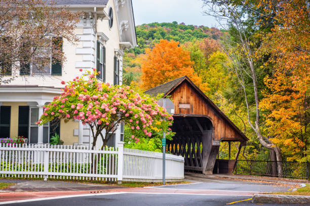
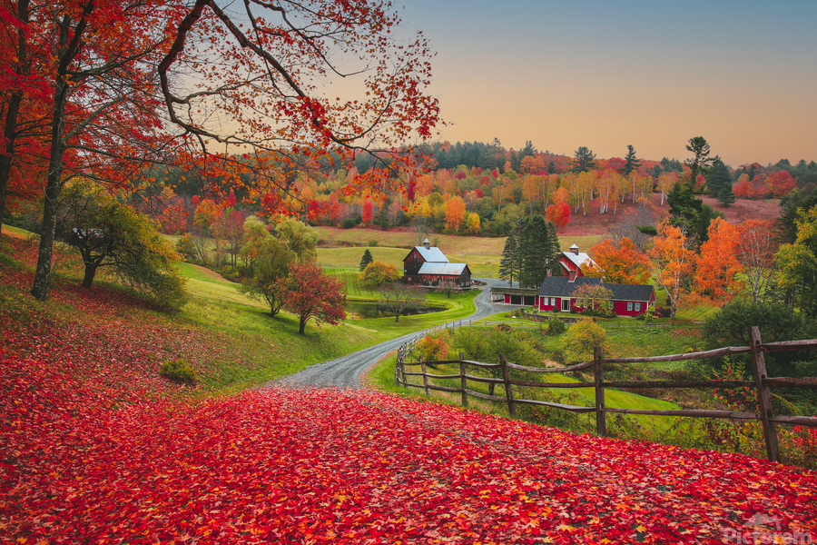
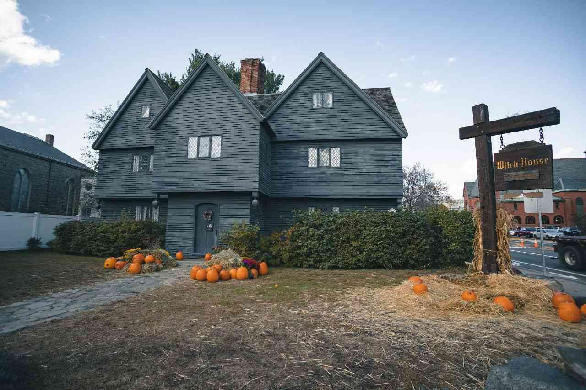

Assignment 10.3: JavaScript - Part 2
There are a couple of places I have on my bucket list to visit for Autumn/ Spooky Season. I absolutely love Halloween and the fall season in general and would love to have a spooky road trip with my friends and family.
- Woodstock, Vermont – one look at the photos of this place in the Autumn and you will fall in love. All the vibrant colors and the architecture of the buildings makes it look like the most ideal place to spend the Halloween Season. 
- New Orleans, Louisiana – This is probably the most haunted places to visit because of the history that lies in the town. I’ve only been there once when I was eight but never went on any ghost tours or visited the cemeteries. I would love to visit this place again to visit all the spooky sites and maybe get some beignets from Café du Monde.
- Sleepy Hallow, New York – The location that apparently hold the famous Headless Horseman, this is somewhere I would love to visit for the sites and the history. 
- Estes Park, Colorado – I have visited Estes Park multiple times since it’s only a couple hours away. I have visited the Stanley Hotel, the inspiration for Stephen King’s novel the Shinning, but never done any of the fall festivities there. There is a ghost tour, a yearly Halloween masquerade ball and Oktoberfest!
- Salem, Massachusetts – This is one place that is spooky for its history but becomes even more so during the Halloween Season. People in Salem are obsessed with Halloween and all the decorations show in the town. 